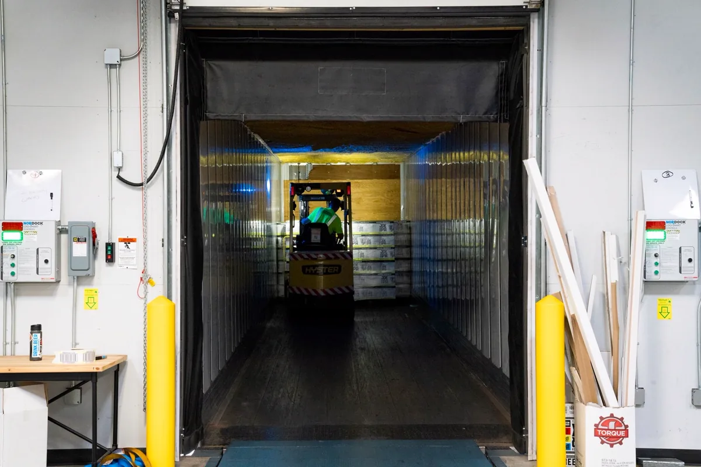

Esta página trata só do custo: o que entra no preço de uma câmara fria, o que a encarece e como pedir orçamento. O escopo completo do serviço — projeto, montagem e manutenção — está na página de câmaras frias em Vitória ES. Para aplicações específicas, veja a câmara fria para restaurante e a câmara fria para açougue e supermercado; se a câmara já existe e o problema é consumo ou falha, o assunto é manutenção de câmara fria.
Por que câmara fria não tem preço de tabela
Quem pergunta "quanto custa uma câmara fria" quase sempre informa só as medidas. Só que duas câmaras de mesmo tamanho podem ter orçamentos muito distantes. Uma guarda bebidas a temperatura de resfriado e tem a porta aberta poucas vezes ao dia. A outra é de congelados, recebe carne ainda morna todas as manhãs e fica ao lado de um forno. Muda a espessura do painel, muda o piso, muda o equipamento, muda a instalação elétrica.
Por isso qualquer valor passado por telefone, sem saber o que vai dentro da câmara, é uma de duas coisas: um número que vai subir depois da visita, ou uma câmara que vai trabalhar no limite desde o primeiro dia. Um orçamento sério parte da carga térmica calculada — a soma de todo o calor que entra na câmara — e só então escolhe painel e equipamento.
O que forma o preço de uma câmara fria
Os itens abaixo aparecem em qualquer proposta completa. Quando algum deles não está escrito, ou está no custo de outro item, ou não foi previsto.
Dimensões e volume
O painel é comprado por área de parede, teto e piso, não por volume. Uma câmara pequena tem muito mais área por metro cúbico do que uma grande, e por isso o preço por m³ cai à medida que a câmara cresce. Altura também conta: pé-direito maior aumenta a área de painel, e armazenagem em palete com empilhadeira pede porta e piso de outra categoria.
Temperatura de operação: resfriado ou congelado
É o item que mais desloca o preço. Quanto maior a diferença entre a temperatura de dentro e a de fora, mais espesso precisa ser o painel e mais capacidade precisa ter o equipamento. Câmara de congelados ainda soma resistência no batente da porta, degelo mais robusto e cuidado especial com o piso. Câmara com duas temperaturas — uma antecâmara resfriada e um compartimento de congelados, por exemplo — divide o custo de uma parede, mas exige dois controles e, normalmente, dois evaporadores.
Tipo e espessura do painel isotérmico
Os núcleos mais usados são PIR, PUR e EPS. O EPS custa menos e isola menos, então precisa de mais espessura para o mesmo resultado. O PIR isola melhor e tem comportamento superior ao fogo, o que pesa em edificação que passa por vistoria do Corpo de Bombeiros. Também entram no preço a chapa de revestimento, o tipo de encaixe entre painéis e as cantoneiras sanitárias — detalhe que a vigilância sanitária olha em câmara de alimento.
Piso, isolamento e barreira contra empolamento
Câmara de resfriados montada sobre piso existente pode usar o próprio contrapiso, desde que seja lavável e tenha caimento. Em congelados, o frio atravessa a laje e congela a umidade do solo; o gelo expande e levanta o piso — é o empolamento. Evitar isso exige isolamento de piso, barreira de vapor e, conforme o caso, ventilação ou aquecimento sob a laje. É um custo de obra civil que muitas propostas deixam de fora.
Porta, quantidade de portas e doca
Porta de giro para uso manual, porta de correr para passagem de carrinho ou palete, porta rápida para tráfego intenso, cortina de lâminas ou de ar, janela de visita e dispositivo de abertura interna. Cada porta a mais é um ponto de perda de frio e um item caro da lista. Quando a câmara encosta em doca de caminhão, entram vedação de doca e nivelador, que mudam a conta.
Sistema de refrigeração: plug-in, split ou rack
O plug-in (monobloco) é compacto, sai mais barato na instalação e joga o calor perto da câmara. O split separa a unidade condensadora, que vai para fora, do evaporador interno, com linhas frigoríficas entre eles. O rack, com vários compressores atendendo diversas câmaras e expositores, é comum em supermercado. O fluido refrigerante também influencia: fluidos em processo de restrição tendem a ficar mais caros e escassos ao longo da vida da câmara, e alternativas de menor impacto ambiental pedem técnico preparado para elas. Marca de compressor não é o critério principal; a capacidade na condição real de operação é.
Carga térmica: produto quente e porta aberta
Produto que entra na temperatura de conservação exige pouco do equipamento. Produto que entra quente — carne recém-desossada, preparação que sai da cozinha, hortifrúti vindo da estrada — exige capacidade para retirar esse calor no tempo certo. Cada abertura de porta deixa entrar ar quente e úmido, que vira gelo no evaporador. O cálculo segue métodos consagrados, como os do ASHRAE Handbook de refrigeração, e é o que define o tamanho do equipamento.
Local da condensadora e linhas frigoríficas
Condensadora em área ventilada e à sombra trabalha melhor e gasta menos. Se ela precisa ir para o telhado, para uma laje distante ou para uma fachada com restrição de condomínio, crescem as linhas frigoríficas, o isolamento, a estrutura de suporte e o acesso para manutenção. Em câmara montada dentro de um galpão metálico, a posição da condensadora deve ser prevista junto com a cobertura.
Instalação elétrica
Circuito dedicado, quadro de comando com proteção, aterramento e, dependendo da potência, alimentação trifásica. Se o padrão de entrada do imóvel não comporta a nova carga, pode ser necessário pedir aumento de carga à concessionária — prazo e custo que precisam entrar no cronograma desde o início.
Automação, datalogger e alarme
Controlador de temperatura, sensor calibrado, registro contínuo por datalogger, alarme de temperatura alta e de porta aberta, aviso remoto. É um item de custo baixo diante do valor do produto armazenado, e é o registro que sustenta a câmara em vistoria sanitária pelas boas práticas da ANVISA e em auditoria de cliente.
Montagem, prazo e frete
Montagem com o estabelecimento funcionando, em horário restrito ou em etapas custa mais do que montagem em área livre. Prazo apertado também. O frete dos painéis pesa porque o material é volumoso e, quando vem de fábrica distante, ocupa carreta inteira mesmo em câmara pequena. Some ainda a ART e o laudo técnico do projeto e da execução, que respondem pela instalação perante a fiscalização e o seguro.
| Item | O que faz o custo subir | Pergunta para o fornecedor |
|---|---|---|
| Painel | Congelados, núcleo EPS pedindo mais espessura, muitas portas e recortes | Qual núcleo e qual espessura, e por quê? |
| Piso | Congelados, piso sem isolamento, tráfego de empilhadeira | Como o piso é protegido contra empolamento? |
| Porta | Porta de correr ou rápida, doca, cortina, mais de uma porta | Tem abertura interna e resistência no batente? |
| Refrigeração | Produto entrando quente, muitas aberturas, condensadora distante | Qual a capacidade na temperatura real de operação? |
| Elétrica | Alimentação trifásica, aumento de carga no padrão de entrada | O quadro e o circuito estão incluídos? |
| Controle | Datalogger, alarme remoto, integração com outras câmaras | O registro de temperatura está incluído? |
| Montagem | Loja em funcionamento, horário noturno, acesso difícil | O frete e a remoção do entulho estão no preço? |
Câmara fria usada, remontada ou contêiner reefer: vale a pena?
A câmara usada aparece como atalho quando o orçamento de uma nova assusta. Pode ser um bom negócio, mas só depois de avaliada — e a avaliação tem que acontecer antes da compra, não na montagem.
- Painel com núcleo úmido: painel que passou anos com vedação ruim pode ter absorvido umidade e perdido parte do isolamento. Por fora parece inteiro.
- Encaixe danificado na desmontagem: painel arrancado sem cuidado não veda mais na junta, e junta que não veda vira gelo e conta de energia.
- Equipamento sem histórico: compressor de origem desconhecida, com fluido em desuso, pode custar mais para reparar do que um conjunto novo bem dimensionado.
- Medidas que não servem: painel cortado para outra planta raramente se encaixa no novo espaço sem sobras, recortes ou compra complementar.
- Carga térmica diferente: o equipamento foi escolhido para a operação antiga. Se o produto ou o giro mudaram, ele pode não dar conta.
O contêiner refrigerado (reefer) é outra alternativa comum para quem precisa de frio rápido ou temporário. A unidade de refrigeração foi projetada para transporte, e a tensão de alimentação, o espaço para manobra e o acesso de carga precisam ser conferidos no local. Funciona bem em alguns casos; em outros, o custo de adaptar a operação ao contêiner supera o de montar uma câmara sob medida.

Custo de compra e custo de operação: a câmara barata que sai cara
O preço de compra é pago uma vez. A energia, a manutenção e as perdas de produto são pagas todos os meses, enquanto a câmara existir. Uma proposta mais barata costuma economizar justamente onde o custo de operação nasce: painel mais fino, evaporador menor, porta sem cortina, piso sem isolamento, condensadora espremida num canto sem ventilação.
O resultado aparece em pouco tempo: compressor que não desliga, gelo no evaporador, temperatura oscilando nos horários de maior movimento, produto perdendo peso ou validade. A doca da foto acima mostra o ponto crítico de muitas operações — cada minuto de porta aberta é carga térmica que o equipamento precisa retirar. Na comparação entre propostas, vale perguntar quanto a câmara deve consumir na operação real, e não só quanto custa montá-la.
Manutenção entra na mesma conta. Um plano preventivo com limpeza de condensador, conferência de vedação e ajuste de degelo custa pouco perto de uma perda de estoque; o roteiro está detalhado na página de manutenção de câmara fria na Grande Vitória. Quando o mesmo imóvel tem ar-condicionado central, esse plano anda junto do PMOC, que é um documento separado.
Como pedir um orçamento de câmara fria comparável
Três propostas só podem ser comparadas se partirem das mesmas informações. Envie para todos os fornecedores o mesmo pacote:
- Produto e temperatura de conservação — o que vai ser guardado e a que temperatura, conforme a exigência sanitária do produto;
- Medidas ou quantidade — medidas internas desejadas ou o volume de produto a armazenar, e se será em prateleira, gancho ou palete;
- Entrada diária — quanto produto entra por dia e a que temperatura ele chega;
- Uso da porta — quantas aberturas por dia, se passa carrinho, palete ou empilhadeira, se há doca;
- Local — fotos e medidas do espaço, tipo de piso, onde a condensadora pode ficar e a distância até ela;
- Energia — se o imóvel é monofásico ou trifásico e se há folga no quadro;
- Operação durante a obra — se o estabelecimento continua funcionando e em que horário a montagem pode acontecer;
- Exigências externas — vigilância sanitária, auditoria de rede ou contrato de fornecimento que peça registro de temperatura.
O que uma proposta completa precisa mostrar
Na hora de comparar, desconfie da proposta que só traz medidas e valor total. Uma proposta que se sustenta informa:
- a carga térmica considerada e as premissas usadas (produto, entrada diária, aberturas);
- núcleo e espessura do painel de parede, teto e piso;
- tipo de sistema, capacidade na temperatura de operação e fluido refrigerante;
- porta, acessórios e dispositivo de abertura interna;
- o que está incluído de elétrica, piso, dreno e obra civil — e o que fica por conta do cliente;
- controle, registro de temperatura e alarme;
- frete, montagem, partida, treinamento e garantia;
- responsável técnico e ART.
Na Axial Engenharia o orçamento sai dessa lista: calculamos a carga térmica, escolhemos painel e equipamento a partir dela e apresentamos a proposta item por item, com ART registrada no CREA-ES. O detalhamento técnico de cada etapa está na página de projeto e montagem de câmara fria.
Perguntas frequentes sobre o preço de câmara fria
Quanto custa uma câmara fria pequena?
Não existe valor honesto sem saber o produto, a temperatura de operação, o giro diário e onde a câmara será instalada. Duas câmaras com as mesmas medidas podem ter custos muito diferentes: uma de resfriados para bebidas, com porta aberta poucas vezes ao dia, e outra de congelados que recebe carne ainda morna todas as manhãs exigem painel, piso e equipamento diferentes. O caminho é mandar essas informações e receber uma proposta com carga térmica calculada, item por item.
Dá para calcular o preço da câmara fria por metro cúbico?
Só como referência grosseira, e mesmo assim engana. O custo do painel acompanha a área de parede, teto e piso, não o volume; câmara pequena tem mais área por metro cúbico e sai proporcionalmente mais cara. O equipamento de refrigeração acompanha a carga térmica, que depende do produto, da temperatura de entrada e das aberturas de porta. Porta, controle, instalação elétrica e montagem têm um custo que quase não muda com o tamanho.
Câmara fria usada vale a pena?
Pode valer, desde que seja avaliada antes da compra. Os riscos são painel com núcleo úmido ou encaixe danificado na desmontagem, equipamento sem histórico ou com fluido refrigerante em desuso, medidas que não servem ao espaço e ausência de projeto. Painel em bom estado costuma ser a parte mais aproveitável; o equipamento de refrigeração precisa ser conferido contra a carga térmica da nova operação, e não contra a antiga.
Câmara de congelados custa mais que câmara de resfriados?
Custa, e por mais de um motivo. A diferença entre a temperatura interna e a externa é maior, então o painel precisa ser mais espesso e o equipamento, mais potente. O piso exige isolamento e, em muitos casos, proteção contra o congelamento do solo, que levanta a laje por empolamento. A porta leva resistência de aquecimento no batente e o evaporador precisa de degelo mais robusto. Tudo isso também aumenta o consumo de energia na operação.
O que preciso enviar para receber orçamento de câmara fria?
Produto armazenado e temperatura de conservação, medidas internas desejadas ou quantidade a guardar, quanto produto entra por dia e a que temperatura, quantas vezes a porta abre, onde a câmara fica e onde pode ficar a condensadora, tipo de energia disponível no local, se há doca ou empilhadeira e fotos do espaço. Com isso dá para calcular a carga térmica e fazer uma proposta que possa ser comparada com outras.
Orçamento de câmara fria na Grande Vitória
Carga térmica, proposta item por item e montagem para comércio e indústria da região:
Quer saber quanto custa a sua câmara?
Mande o produto, as medidas, a temperatura e a entrada diária. Retornamos com carga térmica e proposta detalhada.